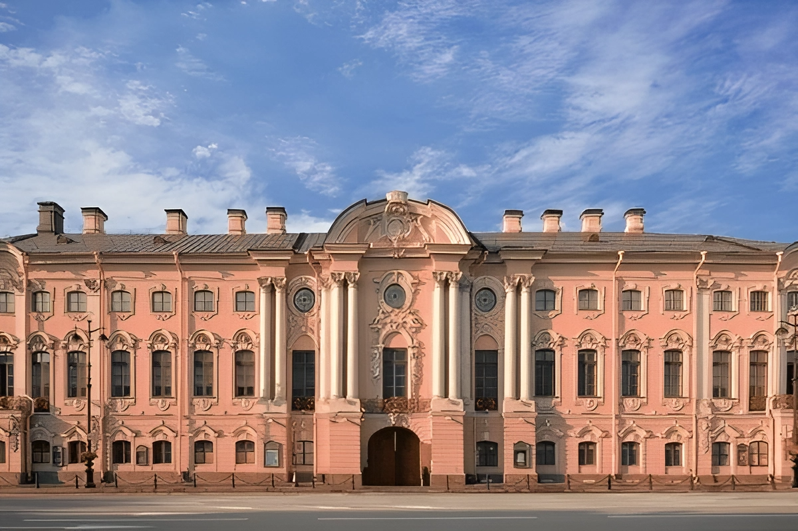
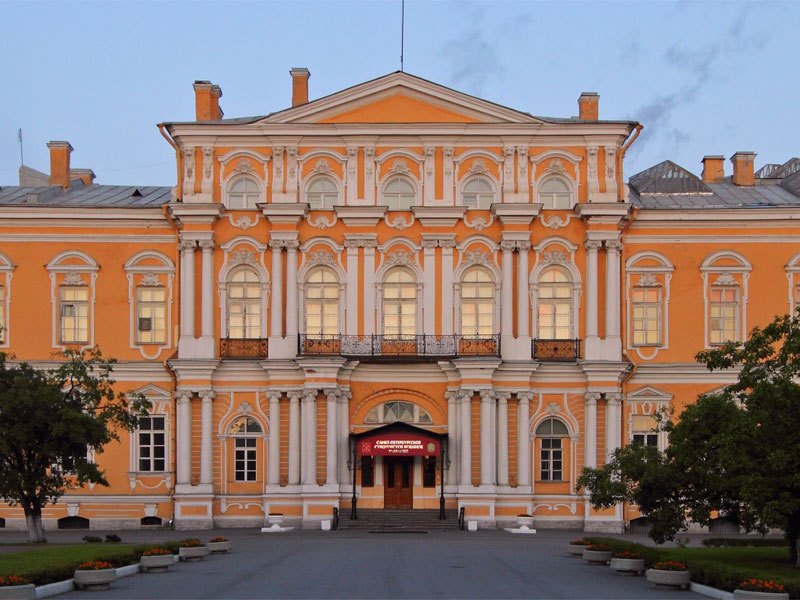

Строгановский дворец

Воронцовский дворец
| Петровское барокко | Классицизм | Ампир | Эклектика | Модерн |
Строгановский дворец
Воронцовский дворец
В этот период строительство дворцов, усадеб, храмов развернулось с большим размахом. Стремление к великолепию, к величавой парадности, к декоративному блеску отражало интересы придворной знати. Оно также соответствовало идеям государственного могущества.
В этот период стиль барокко достиг своего пышного расцвета. Живописная пластика и динамика архитектурных форм, огромное разнообразие декоративного убранства в сочетании с ясностью планировочных решений и с крупномасштабностью сооружений, вмещающих в себя огромные залы, анфилады парадных помещений, широкие лестницы — все это отличало архитектуру императорских резиденций, дворцов и усадеб, церквей и соборов, построенных в этот период. Элементы ордера использовались для усиления рельефа стен, для обогащения светотеневой игры архитектурных плоскостей и объемов. Ордерная система, декорировавшая стену, была уже не барельефом с плоскими пилястрами, а сочным горельефом с трехчетвертными колоннами. Контрастные цветовые решения (белые элементы ордера на цветном фоне стены) подчеркивали праздничную декоративность архитектуры. Особая изощренность и богатство декорировки характерны для стиля барокко в решении интерьеров. Причудливость и беспредельная фантазийность лепных и резных украшений в интерьерах этой эпохи часто определяют термином рококо (от французского рокайл — осколки раковины).
Чрезвычайное богатство декора интерьеров русских барочных сооружений имеет корни как в западном рококо, так и в русских традициях, — вспомним насыщенные декором интерьеры древнерусских палат, теремов, храмов, иконостасы с ажурной золоченой резьбой. Самым ярким и плодовитым представителем из плеяды русских зодчих, работавших в стиле высокого барокко, был Б. Ф. Растрелли (1700—1771). Собственно, он и стал предвестником этого стиля в России. И здесь, на своей второй родине, благодаря богатству и красочности своих барочных архитектурных композиций, он снискал мировую известность.
Собор смольного монастыря
Никольский собор